Notch_Analysis
Notch_Analysis_updated.RmdOverview
This vignette demonstrates the application of PathwayEmbed in a
Notch-perturbed system (Ncstn fl/fl cKO bone marrow) and in aging
SSPCs.
Reference: Remark et al., Bone Res 11, 50 (2023). https://doi.org/10.1038/s41413-023-00283-8
Load Packages
library(Seurat)
#> Warning: package 'Seurat' was built under R version 4.4.3
#> Loading required package: SeuratObject
#> Warning: package 'SeuratObject' was built under R version 4.4.3
#> Loading required package: sp
#> Warning: package 'sp' was built under R version 4.4.3
#>
#> Attaching package: 'SeuratObject'
#> The following objects are masked from 'package:base':
#>
#> intersect, t
library(PathwayEmbed)
library(ggplot2)
#> Warning: package 'ggplot2' was built under R version 4.4.3
library(dplyr)
#> Warning: package 'dplyr' was built under R version 4.4.3
#>
#> Attaching package: 'dplyr'
#> The following objects are masked from 'package:stats':
#>
#> filter, lag
#> The following objects are masked from 'package:base':
#>
#> intersect, setdiff, setequal, union
library(patchwork)
library(pheatmap)
library(tidyr)
#> Warning: package 'tidyr' was built under R version 4.4.3
library(pROC)
#> Registered S3 method overwritten by 'pROC':
#> method from
#> plot.roc spatstat.explore
#> Type 'citation("pROC")' for a citation.
#>
#> Attaching package: 'pROC'
#> The following objects are masked from 'package:stats':
#>
#> cov, smooth, varHelper: Annotation Label Builder
make_label <- function(stats, group1, group2) {
d <- round(stats$cohens_d[1], 3)
p <- formatC(stats$p_value[1], format = "e", digits = 2)
on1 <- stats$percentage_on[stats$group == group1]
off1 <- stats$percentage_off[stats$group == group1]
on2 <- stats$percentage_on[stats$group == group2]
off2 <- stats$percentage_off[stats$group == group2]
paste0(
group1, ": ON=", on1, "%, OFF=", off1, "%\n",
group2, ": ON=", on2, "%, OFF=", off2, "%\n",
"Cohen's d = ", d, "\n",
"p = ", p
)
}Data Preprocessing — WT vs. KO (Ncstn cKO)
The block below is eval=FALSE because the raw 10X data
are large. The pre-processed SSPC subset (COI_2) is loaded
directly from the package in the next chunk.
wt_data <- Read10X(data.dir = "path/to/WT", gene.column = 2)
ko_data <- Read10X(data.dir = "path/to/KO", gene.column = 2)
wt_seurat <- CreateSeuratObject(counts = wt_data, project = "WT")
ko_seurat <- CreateSeuratObject(counts = ko_data, project = "KO")
wt_seurat$condition <- "WT"
ko_seurat$condition <- "KO"
combined <- merge(wt_seurat, y = ko_seurat,
add.cell.ids = c("WT", "KO"), project = "WT_vs_KO")
combined[["RNA"]] <- JoinLayers(combined[["RNA"]])
combined[["percent.mt"]] <- PercentageFeatureSet(combined, pattern = "^mt-")
combined <- subset(combined,
subset = nFeature_RNA > 200 &
nFeature_RNA < 2000 &
percent.mt < 10)
combined <- NormalizeData(combined, normalization.method = "LogNormalize",
scale.factor = 10000)
combined <- FindVariableFeatures(combined, selection.method = "vst",
nfeatures = 2000)
combined <- ScaleData(combined)
combined <- RunPCA(combined)
ElbowPlot(combined, ndims = 50)
combined <- FindNeighbors(combined, dims = 1:20)
combined <- FindClusters(combined, resolution = 1)
combined <- RunUMAP(combined, dims = 1:20)
DimPlot(combined, label = TRUE)
FeaturePlot(combined, "Cxcl12")
FeaturePlot(combined, "Kitl")
COI_2 <- subset(combined, subset = seurat_clusters %in% c("23", "25"))Notch Signaling in Ncstn KO vs. WT SSPCs
COI_2_matrix <- as.matrix(GetAssayData(COI_2, assay = "RNA", layer = "data"))
COI_2_metadata <- COI_2@meta.data
# Load both Notch databases
ListPathway("NOTCH")
#> # A tibble: 6 × 8
#> Pathway Sheet.Name GEO.Accession Condition Cell.Source Species No..Genes Notes
#> <chr> <chr> <chr> <chr> <chr> <chr> <dbl> <chr>
#> 1 NOTCH NOTCH_JAG1 GSE223734 rJAG1 li… Mouse embr… Mouse 5 NA
#> 2 NOTCH NOTCH_CB1… GSE221577 CB-103 N… RPMI-8402 … Human 46 NA
#> 3 NOTCH NOTCH_LY_… GSE221577 LY411575… RPMI-8402 … Human 46 NA
#> 4 NOTCH NOTCH_JAG… GSE235637 JAG1 sti… SVG-A cells Human 11 NA
#> 5 NOTCH NOTCH_JAG… GSE235637 JAG1 sti… SVG-A cells Human 11 NA
#> 6 NOTCH NOTCH_JAG… GSE235637 JAG1 sti… SVG-A cells Human 11 NA
pathwaydata_mus <- LoadPathway("NOTCH_JAG1", "mouse") # mouse perturbation data
pathwaydata_24hr <- LoadPathway("NOTCH_JAG1_24H", "mouse") # human 24hr (cross-species)
matrix_mus <- DataPreProcess(COI_2_matrix, pathwaydata_mus, Seurat.object = FALSE)
matrix_24hr <- DataPreProcess(COI_2_matrix, pathwaydata_24hr, Seurat.object = FALSE)
pathwaystat_mus <- PathwayMaxMin(matrix_mus, pathwaydata_mus)
pathwaystat_24hr <- PathwayMaxMin(matrix_24hr, pathwaydata_24hr)
Notch_score_mus <- ComputeCellData(matrix_mus, pathwaystat_mus)
#> Computing distance...
Notch_score_24hr <- ComputeCellData(matrix_24hr, pathwaystat_24hr)
#> Computing distance...
to_plot_1 <- PreparePlotData(COI_2_metadata, Notch_score_mus, "condition")
to_plot_2 <- PreparePlotData(COI_2_metadata, Notch_score_24hr, "condition")
pct_1 <- CalculatePercentage(to_plot_1, "condition")
pct_2 <- CalculatePercentage(to_plot_2, "condition")
pct_1; pct_2
#> # A tibble: 2 × 5
#> group percentage_on percentage_off cohens_d p_value
#> <chr> <dbl> <dbl> <dbl> <dbl>
#> 1 WT 46 54 0.369 0.141
#> 2 KO 35.4 64.6 0.369 0.141
#> # A tibble: 2 × 5
#> group percentage_on percentage_off cohens_d p_value
#> <chr> <dbl> <dbl> <dbl> <dbl>
#> 1 WT 52 48 0.553 0.00519
#> 2 KO 34.5 65.5 0.553 0.00519
# Database comparison: gene overlap and coefficient agreement
genes_mus <- pathwaydata_mus$Gene_Symbol
genes_24hr <- pathwaydata_24hr$Gene_Symbol
shared <- intersect(genes_mus, genes_24hr)
cat("Genes in mouse database: ", length(genes_mus), "\n")
#> Genes in mouse database: 5
cat("Genes in human 24hr database: ", length(genes_24hr), "\n")
#> Genes in human 24hr database: 9
cat("Shared genes: ", length(shared), "\n")
#> Shared genes: 4
cat("Unique to mouse database: ", length(setdiff(genes_mus, genes_24hr)), "\n")
#> Unique to mouse database: 1
cat("Unique to 24hr database: ", length(setdiff(genes_24hr, genes_mus)), "\n")
#> Unique to 24hr database: 5
coef_mus <- setNames(pathwaydata_mus$Coefficient, pathwaydata_mus$Gene_Symbol)
coef_24hr <- setNames(pathwaydata_24hr$Coefficient, pathwaydata_24hr$Gene_Symbol)
coef_agree <- mean(sign(coef_mus[shared]) == sign(coef_24hr[shared]), na.rm = TRUE)
cat(sprintf("Coefficient direction agreement (shared genes): %.1f%%\n", coef_agree * 100))
#> Coefficient direction agreement (shared genes): 100.0%
PlotPathway(to_plot_1, "Notch (mouse database)", "condition",
c("#FFDAB9", "#A3BFD9")) +
annotate("text", x = Inf, y = Inf, hjust = 1.1, vjust = 1.5,
label = make_label(pct_1, "WT", "KO"), size = 3.5, color = "black")
#> Warning: Using `size` aesthetic for lines was deprecated in ggplot2 3.4.0.
#> ℹ Please use `linewidth` instead.
#> ℹ The deprecated feature was likely used in the PathwayEmbed package.
#> Please report the issue to the authors.
#> This warning is displayed once per session.
#> Call `lifecycle::last_lifecycle_warnings()` to see where this warning was
#> generated.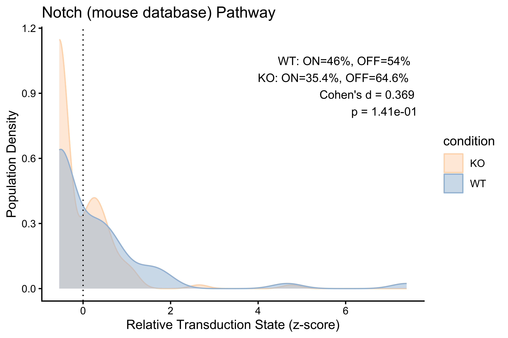
PlotPathway(to_plot_2, "Notch (human 24hr database)", "condition",
c("#FFDAB9", "#A3BFD9")) +
annotate("text", x = Inf, y = Inf, hjust = 1.1, vjust = 1.5,
label = make_label(pct_2, "WT", "KO"), size = 3.5, color = "black")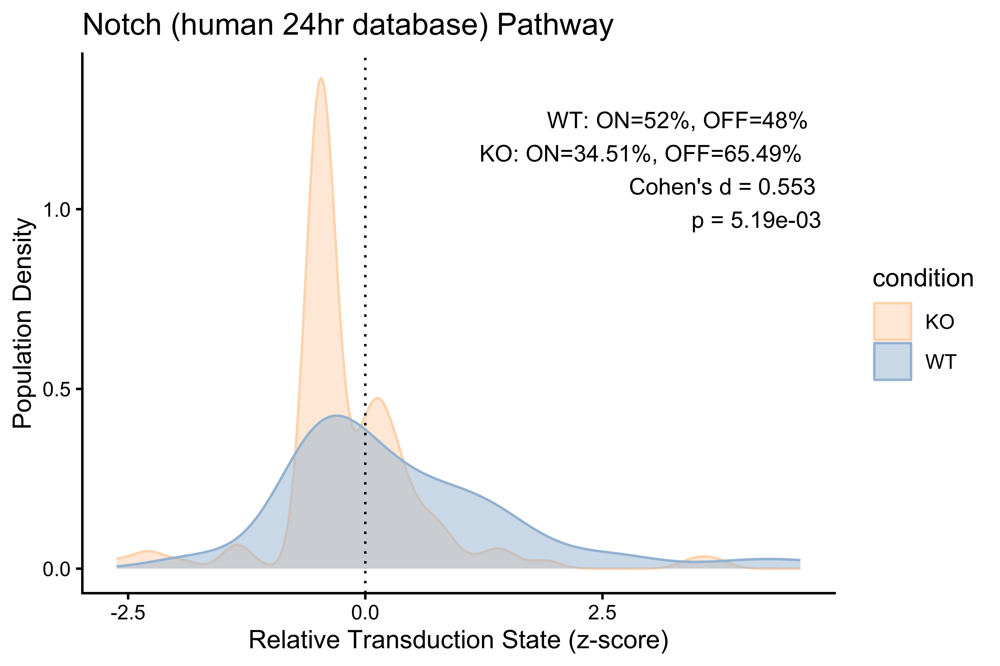
Benchmark — Ncstn KO vs. WT
common_genes <- intersect(rownames(COI_2_matrix), pathwaydata_24hr$Gene_Symbol)
gene_matrix <- as.matrix(COI_2_matrix[common_genes, ])
mean_expr <- colMeans(gene_matrix, na.rm = TRUE)
zscore_mean_per_cell <- colMeans(t(scale(t(gene_matrix))), na.rm = TRUE)
Notch_features <- rownames(matrix_24hr)
COI_2 <- AddModuleScore(
object = COI_2,
features = list(Notch_features),
name = "Notch_ModuleScore",
ctrl = 5,
nbin = 10
)
module_score <- setNames(
COI_2@meta.data$Notch_ModuleScore1,
rownames(COI_2@meta.data)
)
cells <- names(Notch_score_24hr)
benchmark_df <- data.frame(
PathwayEmbed = as.numeric(Notch_score_24hr),
AddModuleScore = as.numeric(module_score[cells]),
mean_expr = as.numeric(mean_expr[cells]),
zscore_expr = as.numeric(zscore_mean_per_cell[cells]),
row.names = cells
)
benchmark_cor <- cor(benchmark_df, method = "spearman",
use = "pairwise.complete.obs")
print(round(benchmark_cor, 3))
#> PathwayEmbed AddModuleScore mean_expr zscore_expr
#> PathwayEmbed 1.000 0.645 0.730 0.690
#> AddModuleScore 0.645 1.000 0.899 0.848
#> mean_expr 0.730 0.899 1.000 0.954
#> zscore_expr 0.690 0.848 0.954 1.000
p_cor <- pheatmap(
benchmark_cor,
color = colorRampPalette(c("#185FA5", "white", "#993C1D"))(100),
breaks = seq(-1, 1, length.out = 101),
display_numbers = TRUE, number_format = "%.2f",
fontsize_number = 9,
main = "Method Benchmark — Spearman Correlation (Ncstn KO dataset)"
)
p_cor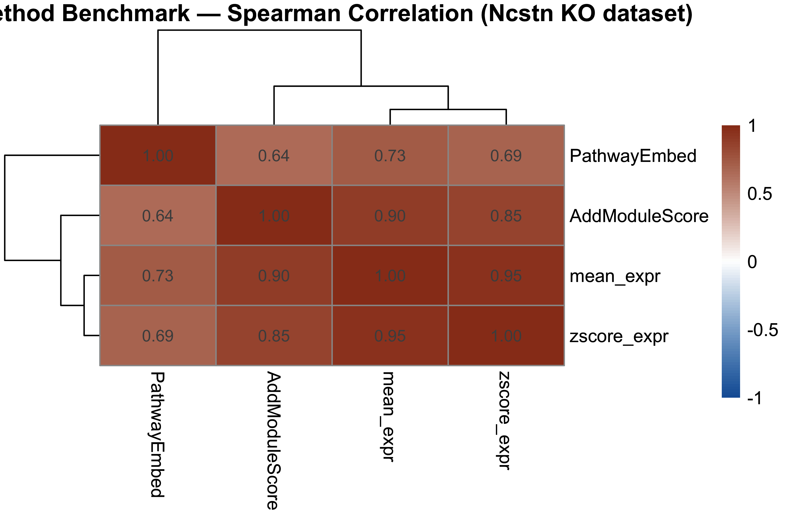
ko_label <- ifelse(COI_2@meta.data[cells, "condition"] == "KO", 1L, 0L)
compute_auroc <- function(scores, labels) {
r <- roc(labels, scores, quiet = TRUE)
auc_val <- as.numeric(auc(r))
if (auc_val < 0.5) auc_val <- 1 - auc_val
auc_val
}
auroc_results <- data.frame(
Method = colnames(benchmark_df),
AUROC = sapply(benchmark_df, compute_auroc, labels = ko_label)
)
auroc_results <- auroc_results[order(-auroc_results$AUROC), ]
print(auroc_results)
#> Method AUROC
#> PathwayEmbed PathwayEmbed 0.6288496
#> mean_expr mean_expr 0.6224779
#> zscore_expr zscore_expr 0.6175221
#> AddModuleScore AddModuleScore 0.5929204
compute_cohens_d_method <- function(scores_vec, seurat_obj, group_col) {
pd <- PreparePlotData(seurat_obj, scores_vec, group_col, Seurat.object = TRUE)
pct <- CalculatePercentage(pd, group_var = group_col)
abs(pct$cohens_d[1])
}
cohens_d_results <- data.frame(
Method = colnames(benchmark_df),
Cohens_d = sapply(
colnames(benchmark_df),
function(m) {
sv <- setNames(benchmark_df[[m]], rownames(benchmark_df))
compute_cohens_d_method(sv, COI_2, "condition")
}
)
)
cohens_d_results <- cohens_d_results[order(-cohens_d_results$Cohens_d), ]
print(cohens_d_results)
#> Method Cohens_d
#> mean_expr mean_expr 0.5751355
#> PathwayEmbed PathwayEmbed 0.5534599
#> zscore_expr zscore_expr 0.5397190
#> AddModuleScore AddModuleScore 0.4965140
method_colors <- c(
"PathwayEmbed" = "#534AB7",
"zscore_expr" = "#E24B4A",
"AddModuleScore" = "#EF9F27",
"mean_expr" = "#888780"
)
p_cd <- ggplot(cohens_d_results,
aes(x = reorder(Method, Cohens_d), y = Cohens_d, fill = Method)) +
geom_bar(stat = "identity", width = 0.6) +
coord_flip() +
scale_fill_manual(values = method_colors) +
labs(title = "Effect size (Cohen's d): KO vs. WT",
x = NULL, y = "Cohen's d (absolute)") +
theme_classic() +
theme(legend.position = "none")
p_cd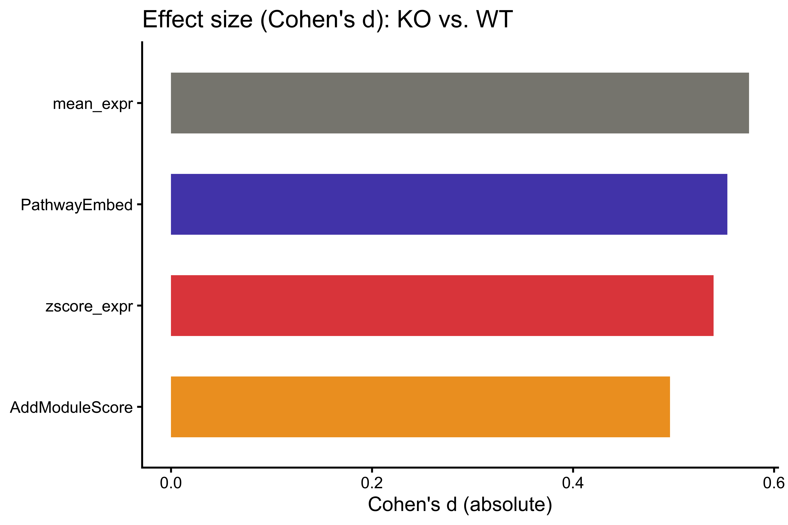
p_auroc <- ggplot(auroc_results,
aes(x = reorder(Method, AUROC), y = AUROC, fill = Method)) +
geom_bar(stat = "identity", width = 0.6) +
geom_hline(yintercept = 0.5, linetype = "dashed", color = "black") +
coord_flip() +
scale_fill_manual(values = method_colors) +
labs(title = "AUROC: KO vs. WT separation (Ncstn KO dataset)",
x = NULL, y = "AUROC") +
ylim(0, 1) +
theme_classic() +
theme(legend.position = "none")
p_auroc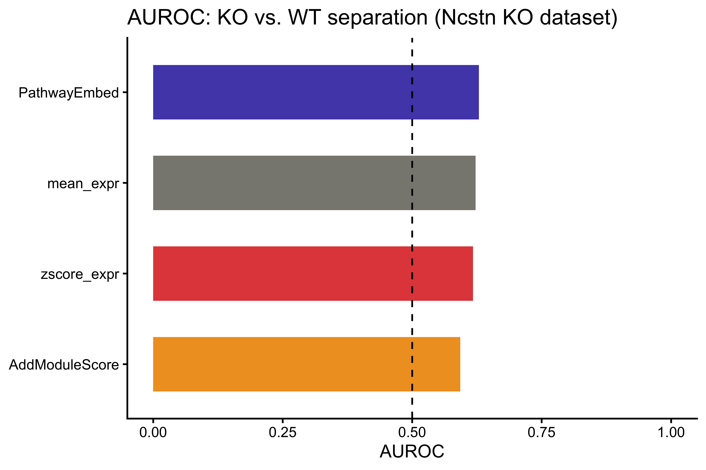
roc_list <- lapply(colnames(benchmark_df), function(m) {
roc(ko_label, benchmark_df[[m]], quiet = TRUE)
})
names(roc_list) <- colnames(benchmark_df)
roc_df <- do.call(rbind, lapply(names(roc_list), function(m) {
r <- roc_list[[m]]
data.frame(Method = m, FPR = 1 - r$specificities, TPR = r$sensitivities)
}))
p_roc <- ggplot(roc_df, aes(x = FPR, y = TPR, color = Method)) +
geom_line(linewidth = 0.9) +
geom_abline(intercept = 0, slope = 1, linetype = "dashed", color = "grey60") +
scale_color_manual(values = method_colors) +
labs(title = "ROC curves: KO vs. WT (Ncstn KO dataset)",
x = "False positive rate", y = "True positive rate") +
theme_classic()
p_roc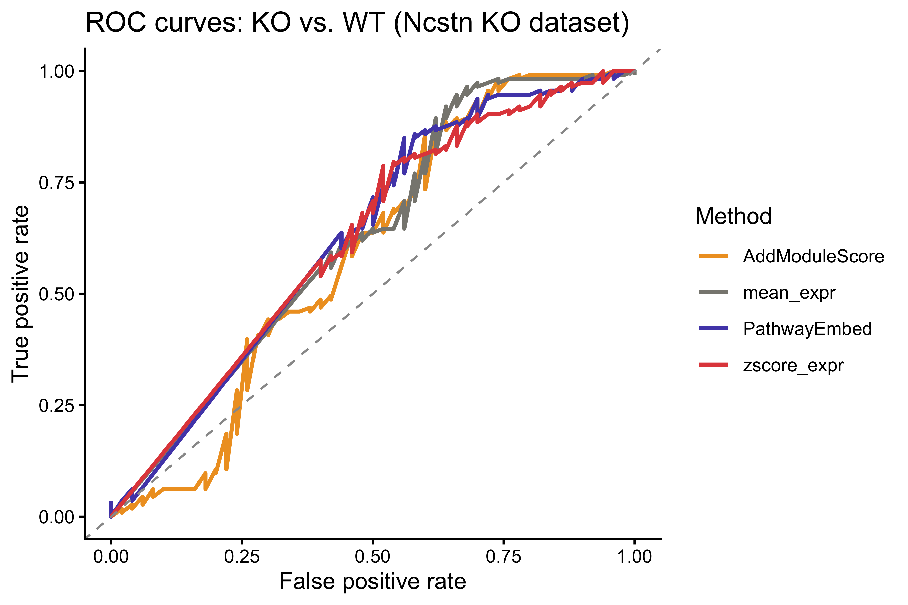
Data Preprocessing — Middle-Age vs. Young SSPCs
wt_data <- Read10X("path/to/WT", gene.column = 2)
young_data <- Read10X("path/to/Young", gene.column = 2)
WT_object <- CreateSeuratObject(counts = wt_data)
Young_object <- CreateSeuratObject(counts = young_data)
WT_object$Age <- "MiddleAge"
Young_object$Age <- "Young"
WT_object[["percent.mt"]] <- PercentageFeatureSet(WT_object, pattern = "^mt-")
Young_object[["percent.mt"]] <- PercentageFeatureSet(Young_object, pattern = "^mt-")
# NOTE: 30% threshold is intentionally permissive — skeletal stem cells retain
# higher baseline mitochondrial content; tighter thresholds remove genuine SSPCs.
WT_object_filtered <- subset(WT_object, subset = nFeature_RNA >= 100 & percent.mt < 30)
Young_object_filtered <- subset(Young_object, subset = nFeature_RNA >= 100 & percent.mt < 30)
merge_object <- merge(WT_object_filtered, Young_object_filtered,
add.cell.ids = c("WT", "Young"))
merge_object[["RNA"]] <- JoinLayers(merge_object[["RNA"]])
merge_object <- NormalizeData(merge_object)
merge_object <- subset(
merge_object,
features = rownames(merge_object)[
Matrix::rowSums(GetAssayData(merge_object, slot = "counts") > 0) > 5]
)
merge_object <- FindVariableFeatures(merge_object, selection.method = "vst",
nfeatures = 3000)
merge_object <- ScaleData(merge_object)
merge_object <- RunPCA(merge_object)
ElbowPlot(merge_object)
merge_object <- FindNeighbors(merge_object, dims = 1:10)
merge_object <- FindClusters(merge_object, resolution = 1)
merge_object <- RunUMAP(merge_object, dims = 1:10)
DimPlot(merge_object, reduction = "umap", group.by = "Age", label = TRUE)
FeaturePlot(merge_object, reduction = "umap", features = "Cxcl12", order = TRUE)
cluster_of_interest <- subset(merge_object, subset = seurat_clusters == 11)
saveRDS(cluster_of_interest, file = "Middle_age_object.rds")Notch Signaling in Middle-Age vs. Young SSPCs
# Re-use the human 24hr database loaded earlier
matrix_notch <- DataPreProcess(cluster_of_interest, pathwaydata_24hr,
Seurat.object = TRUE)
pathwaystat_notch <- PathwayMaxMin(matrix_notch, pathwaydata_24hr)
Notch_score <- ComputeCellData(matrix_notch, pathwaystat_notch)
#> Computing distance...
to_plot <- PreparePlotData(cluster_of_interest, Notch_score, "Age",
Seurat.object = TRUE)
age_stats <- CalculatePercentage(to_plot, "Age")
age_stats
#> # A tibble: 2 × 5
#> group percentage_on percentage_off cohens_d p_value
#> <chr> <dbl> <dbl> <dbl> <dbl>
#> 1 MiddleAge 55.8 44.2 0.605 0.00000455
#> 2 Young 26.1 73.9 0.605 0.00000455
PlotPathway(to_plot, "Notch", "Age", c("orange", "#6baed6")) +
annotate("text", x = Inf, y = Inf, hjust = 1.1, vjust = 1.5,
label = make_label(age_stats, "MiddleAge", "Young"),
size = 3.5, color = "black")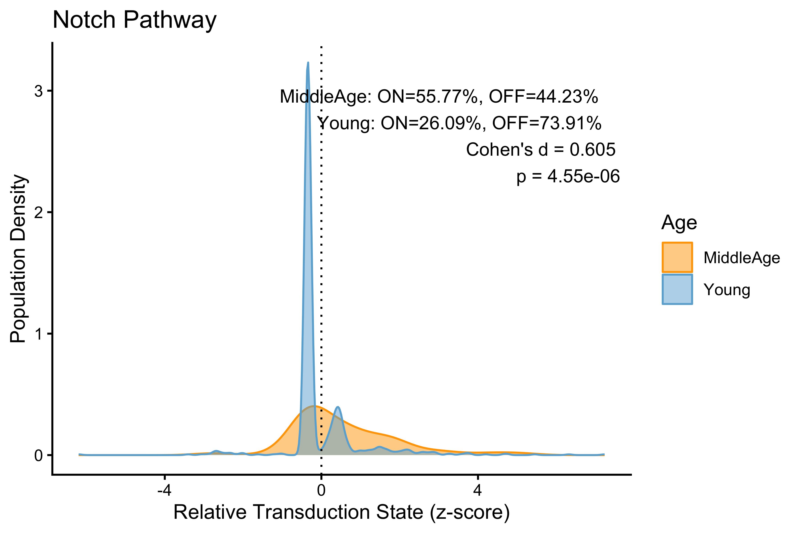
Multi-Pathway Analysis — Middle-Age vs. Young SSPCs
HIf1a_pathwaydata <- LoadPathway("Hypoxia_24hr", "mouse")
#> 1 row(s) with NA gene symbols removed.
Hippo_pathwaydata <- LoadPathway("HIPPO_heat", "mouse")
TGFb_pathwaydata <- LoadPathway("TGFB_Mouse", "mouse")
Wnt_pathwaydata <- LoadPathway("WNT3A_SLOPE_ACTIVATION", "mouse")
pathway_list <- list(
HIF1a = HIf1a_pathwaydata,
Hippo = Hippo_pathwaydata,
TGFb = TGFb_pathwaydata,
Wnt = Wnt_pathwaydata
)
score_list <- list()
cohens_d_list <- list()
for (pathway_name in names(pathway_list)) {
pathway_data <- pathway_list[[pathway_name]]
matrix_data <- DataPreProcess(cluster_of_interest, pathway_data,
Seurat.object = TRUE)
pathway_stat <- PathwayMaxMin(matrix_data, pathway_data)
score <- ComputeCellData(matrix_data, pathway_stat)
score_list[[pathway_name]] <- score
to_plot_p <- PreparePlotData(cluster_of_interest, score, "Age",
Seurat.object = TRUE)
age_stats_p <- CalculatePercentage(to_plot_p, "Age")
cohens_d_list[[pathway_name]] <- abs(age_stats_p$cohens_d[1])
p <- PlotPathway(to_plot_p, pathway_name, "Age", c("orange", "#6baed6")) +
annotate("text", x = Inf, y = Inf, hjust = 1.1, vjust = 1.5,
label = make_label(age_stats_p, "MiddleAge", "Young"),
size = 3.5, color = "black")
print(p)
ggsave(
filename = paste0("figs/", gsub("[^A-Za-z0-9_]", "_", pathway_name), "_age.png"),
plot = p, width = 5, height = 4, dpi = 300
)
}
#> Computing distance...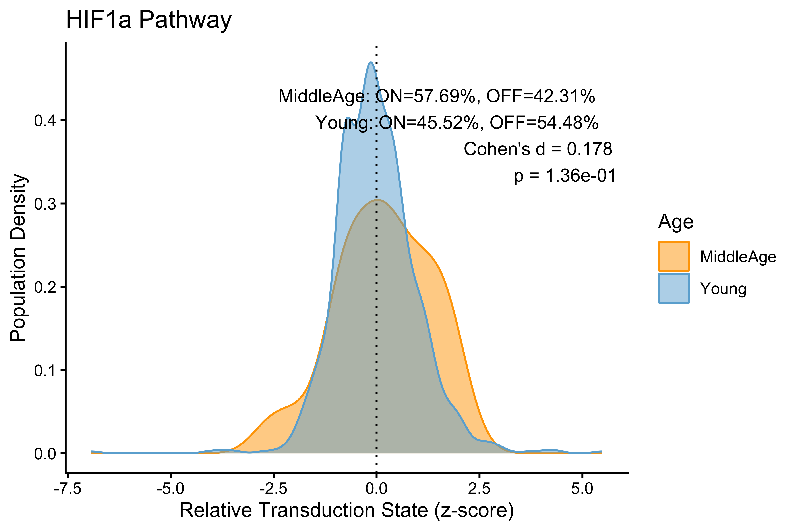
#> Computing distance...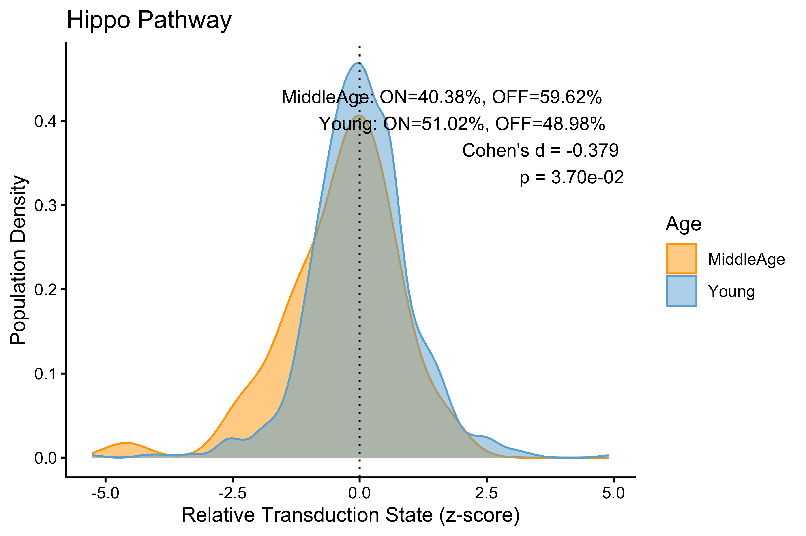
#> Computing distance...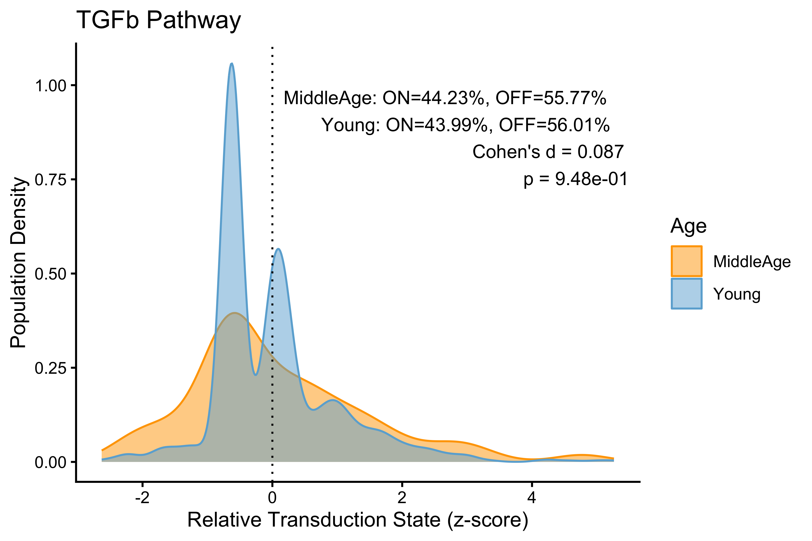
#> Computing distance...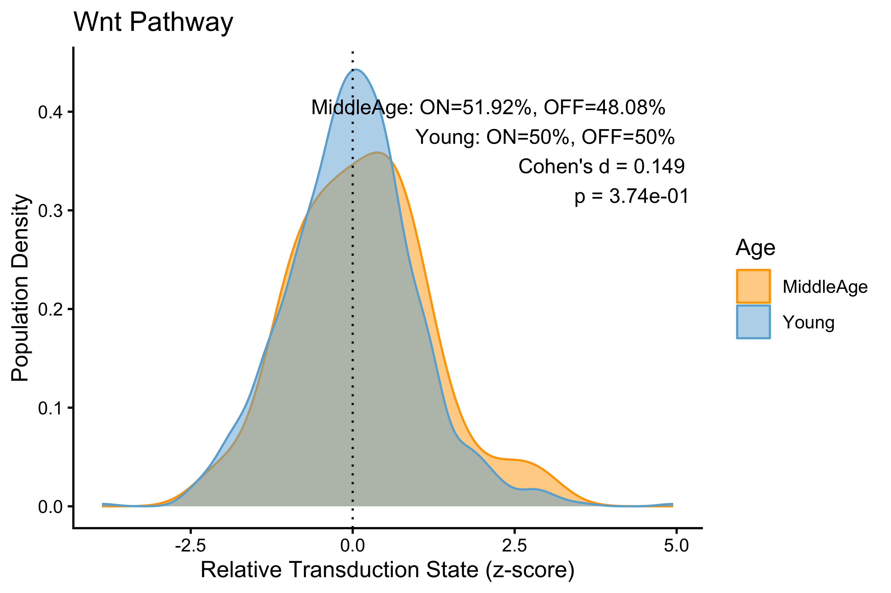
Cross-Pathway Comparison
# Add Notch to score list (computed in notch-aging chunk)
score_list[["Notch"]] <- Notch_score
cohens_d_list[["Notch"]] <- abs(age_stats$cohens_d[1])
# Build score data frame aligned to metadata
score_df <- as.data.frame(score_list)
score_df$cell <- rownames(score_df)
meta_df <- cluster_of_interest@meta.data
meta_df$cell <- rownames(meta_df)
score_df$Age <- meta_df$Age[match(score_df$cell, meta_df$cell)]
score_df$Age_binary <- ifelse(score_df$Age == "MiddleAge", 1, 0)
pathway_cols <- c("HIF1a", "Hippo", "TGFb", "Wnt", "Notch")
pathway_mat <- score_df[, pathway_cols]
# Spearman correlation heatmap
pathway_cor <- cor(pathway_mat, method = "spearman", use = "pairwise.complete.obs")
print(round(pathway_cor, 3))
#> HIF1a Hippo TGFb Wnt Notch
#> HIF1a 1.000 -0.016 0.097 0.039 0.118
#> Hippo -0.016 1.000 -0.025 -0.097 -0.042
#> TGFb 0.097 -0.025 1.000 0.020 0.050
#> Wnt 0.039 -0.097 0.020 1.000 0.080
#> Notch 0.118 -0.042 0.050 0.080 1.000
pheatmap(
pathway_cor,
color = colorRampPalette(c("#185FA5", "white", "#993C1D"))(100),
breaks = seq(-1, 1, length.out = 101),
display_numbers = TRUE, number_format = "%.2f",
fontsize_number = 10,
main = "Spearman Correlation Between Pathways"
)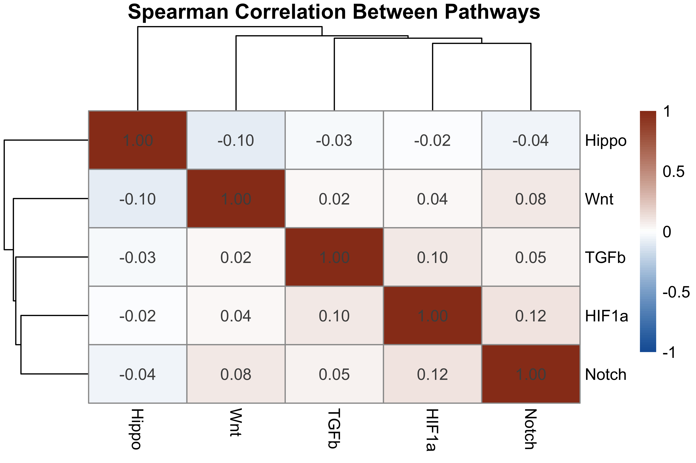
# PCA of pathway activity space
pca <- prcomp(pathway_mat, scale. = TRUE)
p_pca <- data.frame(pca$x, Age = score_df$Age)
ggplot(p_pca, aes(PC1, PC2, color = Age)) +
geom_point(alpha = 0.6) +
theme_classic() +
labs(title = "PCA of pathway activity space")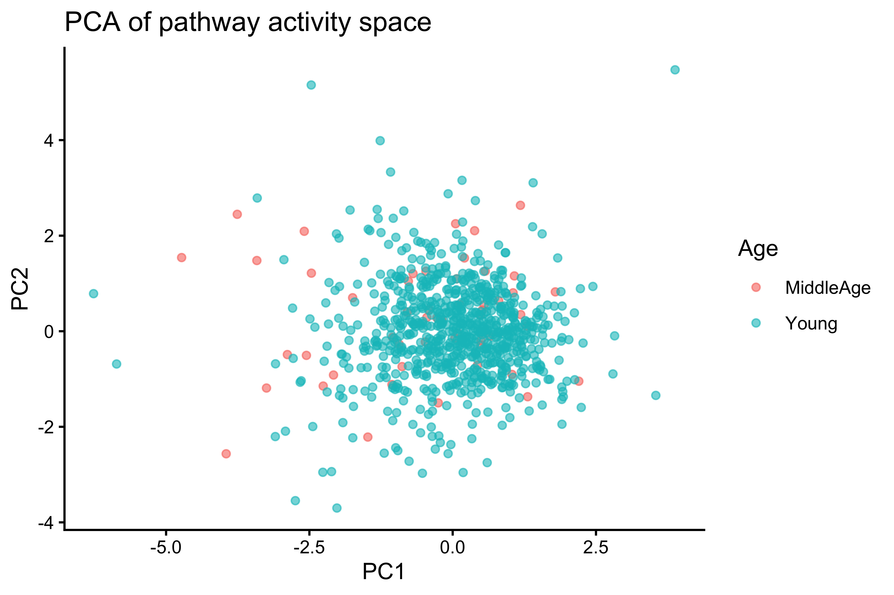
# AUROC per pathway
compute_auroc_safe <- function(scores, labels) {
valid <- !is.na(scores) & !is.na(labels)
if (length(unique(labels[valid])) < 2) return(NA)
r <- roc(labels[valid], scores[valid], quiet = TRUE)
a <- as.numeric(auc(r))
if (a < 0.5) a <- 1 - a
a
}
auroc_df <- data.frame(
Pathway = pathway_cols,
AUROC = sapply(pathway_cols, function(pw) {
compute_auroc_safe(score_df[[pw]], score_df$Age_binary)
})
)
auroc_df <- auroc_df[order(-auroc_df$AUROC), ]
print(auroc_df)
#> Pathway AUROC
#> Notch Notch 0.6560963
#> Hippo Hippo 0.5862802
#> HIF1a HIF1a 0.5615532
#> Wnt Wnt 0.5368016
#> TGFb TGFb 0.5026313
p_auroc_age <- ggplot(auroc_df,
aes(x = reorder(Pathway, AUROC), y = AUROC, fill = Pathway)) +
geom_col(width = 0.6) +
coord_flip() +
geom_hline(yintercept = 0.5, linetype = "dashed") +
geom_text(aes(label = sprintf("%.2f", AUROC)), hjust = -0.1, size = 3) +
ylim(0, 1.05) +
labs(title = "AUROC comparison across pathways", x = NULL, y = "AUROC") +
theme_classic() +
theme(legend.position = "none")
p_auroc_age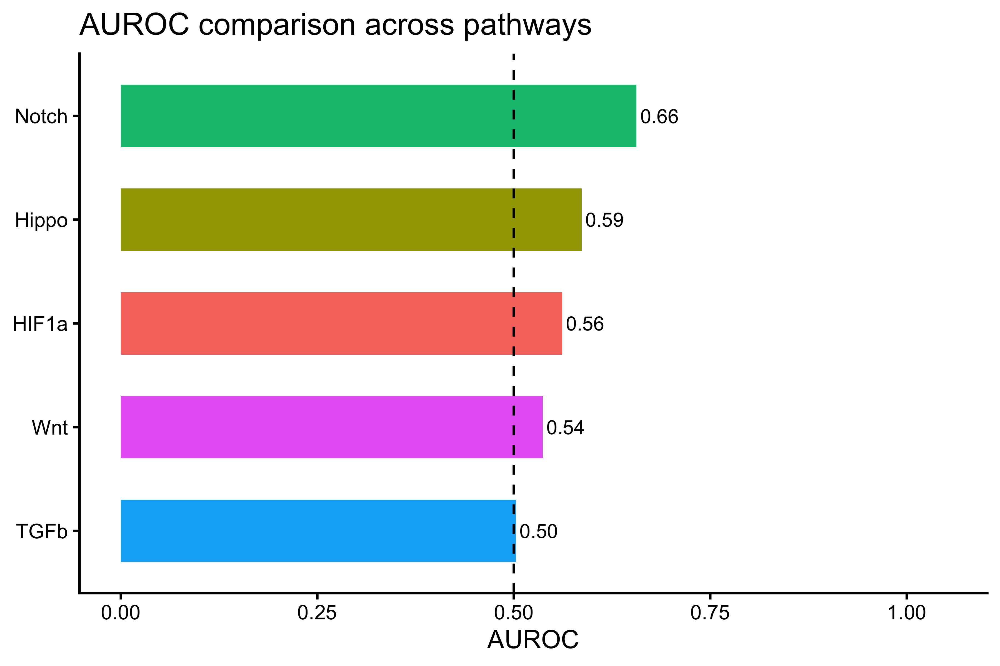
# Cohen's d per pathway
cohens_d_df <- data.frame(
Pathway = names(cohens_d_list),
Cohens_d = unlist(cohens_d_list)
)
cohens_d_df <- cohens_d_df[order(-cohens_d_df$Cohens_d), ]
print(cohens_d_df)
#> Pathway Cohens_d
#> Notch Notch 0.60484360
#> Hippo Hippo 0.37912152
#> HIF1a HIF1a 0.17792267
#> Wnt Wnt 0.14897250
#> TGFb TGFb 0.08659418
p_cd <- ggplot(cohens_d_df,
aes(x = reorder(Pathway, Cohens_d), y = Cohens_d, fill = Pathway)) +
geom_col(width = 0.6) +
coord_flip() +
geom_text(aes(label = sprintf("%.2f", Cohens_d)), hjust = -0.1, size = 3) +
ylim(0, max(cohens_d_df$Cohens_d) * 1.1) +
labs(title = "Effect size (Cohen's d) across pathways", x = NULL, y = "Cohen's d (absolute)") +
theme_classic() +
theme(legend.position = "none")
p_cd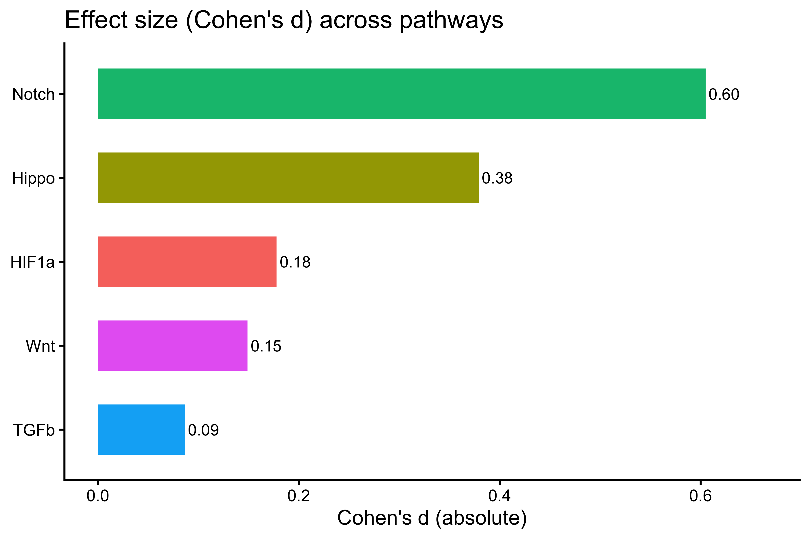
Technical Confounders
cc_genes <- Seurat::cc.genes.updated.2019
cluster_of_interest <- CellCycleScoring(
cluster_of_interest,
s.features = cc_genes$s.genes,
g2m.features = cc_genes$g2m.genes,
set.ident = FALSE
)
#> Warning: The following features are not present in the object: MCM5, PCNA,
#> TYMS, FEN1, MCM7, MCM4, RRM1, UNG, GINS2, MCM6, CDCA7, DTL, PRIM1, UHRF1,
#> CENPU, HELLS, RFC2, POLR1B, NASP, RAD51AP1, GMNN, WDR76, SLBP, CCNE2, UBR7,
#> POLD3, MSH2, ATAD2, RAD51, RRM2, CDC45, CDC6, EXO1, TIPIN, DSCC1, BLM,
#> CASP8AP2, USP1, CLSPN, POLA1, CHAF1B, MRPL36, E2F8, not searching for symbol
#> synonyms
#> Warning: The following features are not present in the object: HMGB2, CDK1,
#> NUSAP1, UBE2C, BIRC5, TPX2, TOP2A, NDC80, CKS2, NUF2, CKS1B, MKI67, TMPO,
#> CENPF, TACC3, PIMREG, SMC4, CCNB2, CKAP2L, CKAP2, AURKB, BUB1, KIF11, ANP32E,
#> TUBB4B, GTSE1, KIF20B, HJURP, CDCA3, JPT1, CDC20, TTK, CDC25C, KIF2C, RANGAP1,
#> NCAPD2, DLGAP5, CDCA2, CDCA8, ECT2, KIF23, HMMR, AURKA, PSRC1, ANLN, LBR,
#> CKAP5, CENPE, CTCF, NEK2, G2E3, GAS2L3, CBX5, CENPA, not searching for symbol
#> synonyms
#> Warning in AddModuleScore.Assay(object = input, features = features, kmeans.obj
#> = kmeans.obj, : Could not find enough features in the object from the following
#> feature lists: S.Score Attempting to match case...Could not find enough
#> features in the object from the following feature lists: G2M.Score Attempting
#> to match case...
stress_genes <- c(
"Fos", "Jun", "Junb", "Atf3", "Egr1",
"Ddit3", "Atf4", "Xbp1", "Hspa5",
"Hspa1a", "Hspa1b", "Hsp90aa1",
"Gadd45a", "Gadd45b", "Gadd45g"
)
cluster_of_interest <- AddModuleScore(
cluster_of_interest,
features = list(stress_genes),
name = "StressScore",
ctrl = 25,
nbin = 24
)
meta_cc <- cluster_of_interest@meta.data
# Merge scores with metadata
score_df_full <- score_df
score_df_full$S_score <- meta_cc$S.Score[ match(score_df_full$cell, rownames(meta_cc))]
score_df_full$G2M_score <- meta_cc$G2M.Score[match(score_df_full$cell, rownames(meta_cc))]
score_df_full$Stress <- cluster_of_interest$StressScore1[
match(score_df_full$cell, rownames(meta_cc))]
score_df_full$nCount_RNA <- meta_cc$nCount_RNA[ match(score_df_full$cell, rownames(meta_cc))]
score_df_full$nFeature_RNA <- meta_cc$nFeature_RNA[match(score_df_full$cell, rownames(meta_cc))]
score_df_full$percent.mt <- meta_cc$percent.mt[ match(score_df_full$cell, rownames(meta_cc))]
covariates <- c("nCount_RNA", "nFeature_RNA", "percent.mt",
"Stress", "S_score", "G2M_score")
cor_mat <- sapply(covariates, function(cov) {
sapply(pathway_cols, function(pw) {
cor(score_df_full[[pw]], score_df_full[[cov]],
method = "spearman", use = "complete.obs")
})
})
rownames(cor_mat) <- pathway_cols
colnames(cor_mat) <- covariates
print(round(cor_mat, 3))
#> nCount_RNA nFeature_RNA percent.mt Stress S_score G2M_score
#> HIF1a 0.315 0.286 -0.148 0.190 -0.031 -0.018
#> Hippo -0.140 -0.140 -0.048 0.028 0.051 0.055
#> TGFb 0.149 0.152 -0.017 0.002 0.016 -0.002
#> Wnt 0.116 0.136 -0.004 0.051 -0.003 0.001
#> Notch 0.181 0.204 0.019 0.161 -0.057 -0.062
pheatmap(cor_mat,
color = colorRampPalette(c("#185FA5", "white", "#993C1D"))(100),
breaks = seq(-1, 1, length.out = 101),
display_numbers = TRUE, number_format = "%.2f",
fontsize_number = 10,
main = "Pathway vs. covariate correlations (Spearman)")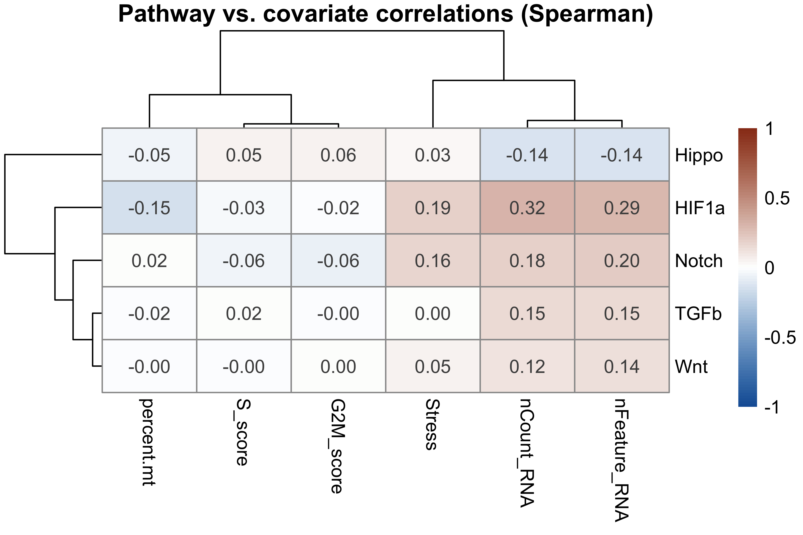
# Scatter: each pathway vs. stress score
plot_df_long <- pivot_longer(
score_df_full[, c("Stress", pathway_cols)],
cols = all_of(pathway_cols),
names_to = "Pathway",
values_to = "Score"
)
cor_df_stress <- plot_df_long %>%
group_by(Pathway) %>%
summarise(cor = cor(Stress, Score, method = "spearman", use = "complete.obs"),
.groups = "drop")
ggplot(plot_df_long, aes(x = Stress, y = Score)) +
geom_point(alpha = 0.4, size = 1.2) +
geom_smooth(method = "lm", se = FALSE, linetype = "dashed", color = "#E24B4A") +
facet_wrap(~ Pathway, scales = "free_y") +
geom_text(data = cor_df_stress,
aes(x = Inf, y = Inf,
label = paste0("\u03c1 = ", round(cor, 2))),
hjust = 1.2, vjust = 1.5, inherit.aes = FALSE) +
theme_classic() +
labs(title = "Pathway scores vs. stress score (Spearman)",
x = "Stress score", y = "Pathway score")
#> `geom_smooth()` using formula = 'y ~ x'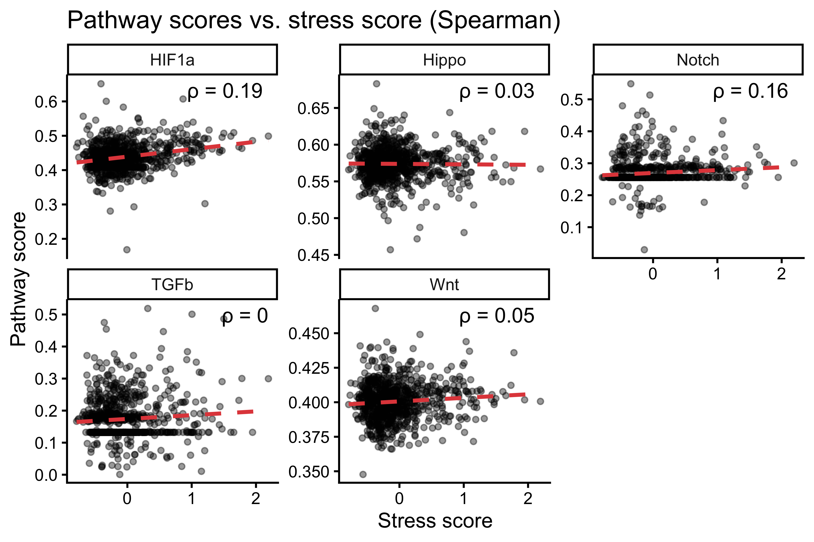